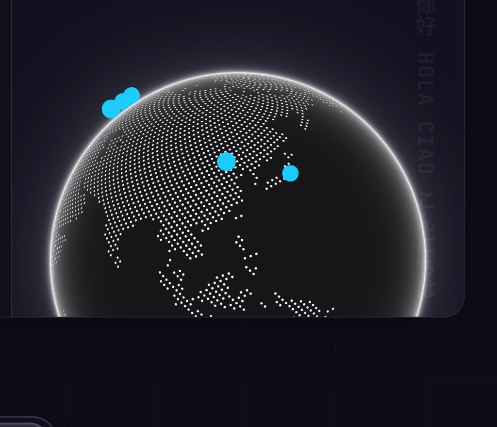

Years old
Fullstack Developer
Hello I’m
17-year-old computer science student | 3+ years building technical products | 45K+ visits on one project | AI, healthtech & cybersecurity

Years of technical experience
Visits on one project
Scientist profiles published
Education
Gymnasium A+
11.94/12GPA · High School
High School
English-medium program with a focus on mathematics, research, academic writing, and independent study.
Harvard VTSP
42%Merit scholarship
Merit Scholar
Selective pre-college program in startup innovation, product strategy, and venture technology. Estimated acceptance rate: ~13%.
uBoost
20Person cohort represented
Business & Market Foundations
Selected from approximately 360 applicants for uBoost’s SheLeads 2.0. Studied finance, marketing, market mechanics, and startup fundamentals while representing a 20-person cohort.
Short Profile

Fluent in Ukrainian,
Russian, English
and Chinese
My primary
tech stackPython,
TypeScript
tech stackPython,
TypeScript
Computer visionReactFastAPINext.jsSQLSupabase
designer
KGSTUDENT RESEARCHERAI + HEALTHTECH
The Inside ScoopFounder, researcher,
team lead & educator
team lead & educator
A small selection of recent projects

Forgotten Scientists
Educational platform restoring overlooked histories in science.
GOLDEN MINUTEFirst aid is a simulation,
Start scenario
First aid is a simulation,
not a test.
Start scenarioAI-FIRST LEARNING MVP
Golden Minute
AI first-aid training with interactive emergency scenarios.
UAV DATAENCRYPTBLOCKCHAIN
Secure UAV Data Pipeline
Blockchain prototype protecting drone-generated information.
AMSFRAWAW
625flight-position records
Orion Aviation Dashboard
Aviation intelligence dashboard built with OpenSky data.
My Experience
IOAI Ukraine National Selection
National finalist, ranked 11th of 2,300 participants after three selection stages.
INFOMATRIX International Hackathon
Bronze Medal and 3rd place among 25+ international teams.
Global Logic & Reasoning Competition
Finalist in an international analytical reasoning and problem-solving competition.
AntiSchool Mathematics Olympiad
1st Place in the Grade 11 division of the All-Ukrainian competition.
My journey report
I have built software across research labs, startups, international programs, hackathons, and nonprofit teams. Here is the path behind the current work.
2020
It started with tutorials, not a master plan.
I watched coding videos, followed beginner tutorials, and tried whatever looked interesting. Nothing serious yet — just curiosity slowly becoming a habit.
NO ARCHIVE YETplay → pause → replay010203
2024
First research, first real-world application.
I finally began applying my technical skills beyond personal experiments. Under the guidance of my computer science teacher, I started my first research project, investigating how BPL data could be transferred into a blockchain-based system.

2025
Research opened the door to competition.
After completing my first research project, I began participating actively in hackathons and international competitions. At INFOMATRIX 2025 in Bucharest, my team and I earned third place—my first major international result.

2026
Golden Minute moved beyond the prototype.
Within uBoost’s SheLeads 2.0 program, Golden Minute—my first-aid training project—was selected for the Top 20 from 120 applicants and advanced to the offline final. I pitched it to CEOs and representatives of Ukrainian companies and startups, gaining external feedback and technical validation.

Next chapter
The story continues.
More research, stronger products, and new questions worth pursuing.
Let’s Talk
What led you here? What are you looking for? I’d love to hear from you over a virtual coffee chat.
Let’s get in touch ↗ Peer through my Personal Life